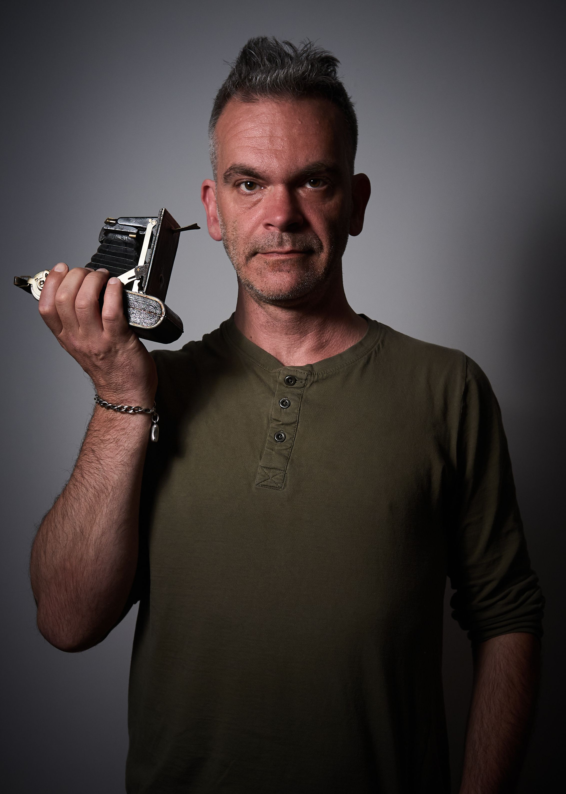

About me
I have been taking photos as long as I can remember. And remembering brings back the smell of chemicals developing film at the attic. Now digital, I focus on photographing people. On the streets of wherever and in a pop-up studio.
I have been taking photos as long as I can remember. And remembering brings back the smell of chemicals developing film at the attic. Now digital, I focus on photographing people. On the streets of wherever and in a pop-up studio.